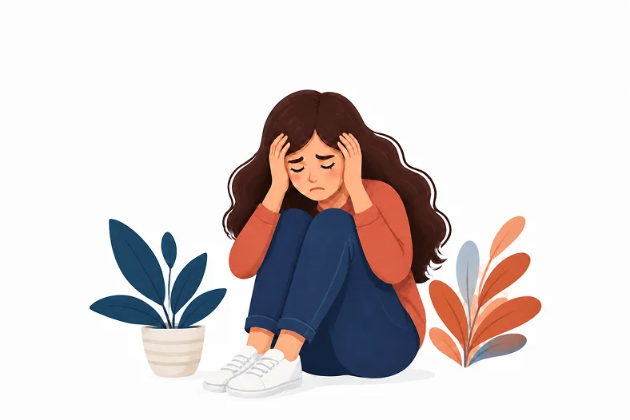
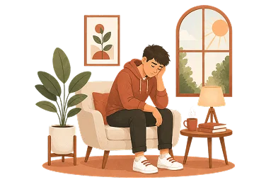
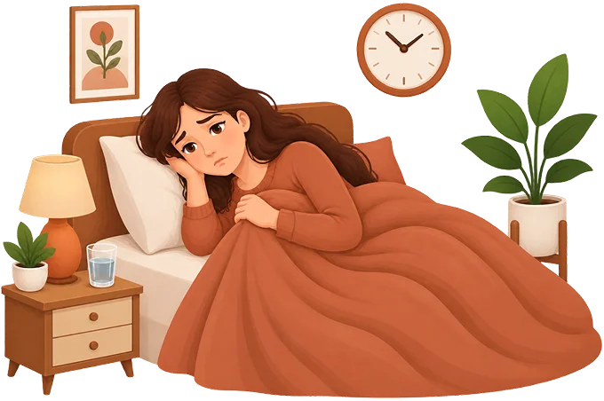
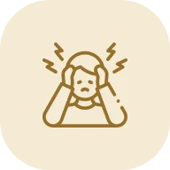

Burnout
Burnout is a state of deep physical, mental, and emotional exhaustion after long term stress. It often develops slowly. You may first notice poor sleep, low energy, irritability, or trouble focusing. Over time, you may feel empty, distant from others, and unable to do things that once felt easy. Burnout can affect work, studies, family life, and everyday activities. Support from a psychologist or workplace, or other trusted people can help you recover.
What Is Burnout?
Burnout is what happens when demands on you consistently exceed the resources you have to meet them, and this goes on for long enough that your body and mind stop being able to compensate. Burnout can come from work, but just as often from a combination of pressures on multiple fronts. Like demanding work, caregiving responsibilities at home, illness, difficult relationships, or major life changes. Moreover, many people are burned out by their home situation, not just work.
It's important to know burnout is not the same as depression. However, the two conditions can occur at the same time and are easy to confuse. Feeling burned out is a signal from your body that something needs to change. It takes courage to take it seriously and seek help at that time.
How WHO Classifies Burnout
The World Health Organization (WHO) classifies burnout in ICD-11 as an occupational phenomenon, not a medical diagnosis. (WHO) This means it is a recognised condition that brings people into contact with health services, but it is not itself a disease. The ICD-11 definition describes burnout as arising from chronic workplace stress.
Burn Out V/s Stress

Stress
Stress can be healthy in short bursts. Stress can be healthy in short bursts. You can usually recover after rest, time off, or the stressful situation ends.

Burnout
Burnout happens when stress never fully releases over a long period and eventually outpaces your capacity to recover. A difficult month at work is not burnout.
Do you feel burned out?
A psychologist can help you understand what's happening and give you a proper diagnosis. We help you find the right psychologist
What Does Burnout Feels Like ? The Three Dimension
It identifies three defining dimensions of burnout. These are not separate conditions; they are interconnected aspects of the same process.
 01
01
“I have nothing left”
Emotional exhaustion
Fatigue, numbness, physical complaints
 02
02
“I don't care anymore.”
Cynicism/depersonalisation
Withdrawal, irritability, detachment
 03
03
“I can't do anything right.”
Reduced accomplishment
Poor concentration, self doubt, low drive
What Causes Burnout?
Burnout does not have a single cause. It develops when sustained demands, whether at work, at home, or both, consistently exceed the resources available to meet them. Many people recognise one or two of these, but in severe burnout, it is common to experience many at once.

Excessive workload and
time pressure
Too much to do, not enough time, with no end in sight

Conflicting demands
Being pulled in multiple directions by different people, roles, or responsibilities simultaneously

Low control
Having little say over how, when, or at what pace you work

Unclear expectations
Not knowing what is expected of you or having expectations that shift constantly.
Life factors beyond work
Burnout is not confined to paid employment. Caregiving for a child, elderly parent, or unwell partner carries many of the same burnout generating factors: high demand, low control, limited acknowledgment, and restricted recovery time. Major life changes, long term illness, and difficult personal relationships can also contribute to or maintain burnout.

Signs Of Burnout
If you are wondering whether what you are experiencing might be burnout, the following signs can be present for weeks rather than days.

Chronic fatigue that is not improved by sleep

Dizziness or palpitations

Losing pleasure in things you used to enjoy

Difficulty concentrating

Irritated and overreacting to little things

Social withdrawal and isolation

Anxiety and constant inner turmoil
Troublesome negativity and cynicism
Do you recognize these symptoms?
Don't wait until it gets worse. A psychologist can help you understand what your body is trying to tell you and guide you through the recovery process step by step.

Signs of Burnout In Women
Women more often experience burnout as a combination of work and caregiving at home.
Typical Signs:
 Chronic feeling of not being enough
Chronic feeling of not being enough
 Guilt for setting boundaries
Guilt for setting boundaries
 Emotional exhaustion after caring for others
Emotional exhaustion after caring for others
 Sleep problems and hormonal disorders
Sleep problems and hormonal disorders
 Somatic complaints such as headaches and stomachaches
Somatic complaints such as headaches and stomachaches

Signs Of Burnout In Men
Men are more likely to underreport and seek help later. Burnout often manifests itself as the following:
Typical Signs:
 Increased irritability and anger
Increased irritability and anger
 Withdrawal and isolation
Withdrawal and isolation
 Excessive alcohol consumption or withdrawal
Excessive alcohol consumption or withdrawal
 Physical complaints without a clear cause
Physical complaints without a clear cause
 Lack of commitment
Lack of commitment
What Can Overlap With or Occur Alongside Burnout?
Several conditions share features with burnout or commonly occur alongside it. A clinical assessment helps clarify what is present.


Ordinary Stress And General Fatigue
Stress and fatigue are normal responses to demanding periods. Burnout does not. It persist and typically worsens when rest alone is available, because the underlying patterns have not changed.

Depression

Anxiety

ADHD

Sleep disorders

Physical and medical causes
Bipolar disorder in children and adolescents
Bipolar disorder can occur in children and adolescents. In young people, the symptoms often look different, making it harder to detect. But diagnosing it in children and adolescents requires careful assessment by specialists.
Typical signs in children and adolescents include extreme mood swings, irritability, sleep problems, impulsivity, and risk-taking behaviour. Many young people with bipolar disorder are first diagnosed with ADHD, depression, or behavioural problems.
Early assessment and treatment are very important. The longer bipolar disorder goes untreated, the higher the risk of consequences on daily life, like schooling, relationships, and future functioning.
Signs of bipolar disorder in children
- Extreme and prolonged irritability
- Dramatic and sudden mood swings
- Excessive energy without sleep
- Grandiosity (belief in having special abilities)
- Longer periods of sadness
- Loss of interest in friends and school

What Are The Common Causes Of Bipolar Disorder?
Bipolar disorder is caused by an interaction of several factors:
Genetics
Heredity is the strongest risk factor
Brain Chemistry
Can trigger or worsen episodes
Stress and Trauma
It trigger the first episode in vulnerable people
Lifestyle
Factors like alcohol and drugs can destabilise mood
Hormones
Puberty, childbirth, and menopause can trigger episodes
MOOD SWINGS AND ANXIETY
Anxiety often occurs in people with bipolar disorder. Mood swings combined with anxiety can be an early sign of the bipolar spectrum.
Bipolar disorder in How Is Bipolar Disorder Assessed?
Because bipolar disorder involves an episodic pattern over time. A clinician needs to understand not just how a person feels right now, but what has happened across their life. whether there have been periods of elevated mood or energy that may have gone unrecognised.
A thorough assessment typically explore:
Current symptoms, mood, and functioning.
When symptoms first appeared and how the pattern has developed
The impact on everyday functioning, relationships, & decision making
Medication and physical health factors that could affect mood.
Alcohol and Substance Use

Previous mood episodes: both depressive and elevated periods
Sleep and energy changes across episodes
Family history of mood disorders or psychiatric conditions.
Other possible mental health explanations for the symptoms
Where appropriate and consented to , information from people ho know the person well.
Assessment for bipolar disorder typically requires a thorough psychological interview. It cannot be done accurately through a brief questionnaire or a single consultation focused only on the current moment.
The Difference Between ADHD And Bipolar Disorder
ADHD and bipolar disorder are often confused because they share many symptoms. Both can cause impulsivity, difficulty concentrating, mood swings, and sleep problems. But they are different conditions.
The most important difference is the pattern. ADHD is constantly present; the person has always had difficulty paying attention. However, bipolar disorder is episodic. It fluctuates between periods that can be very different.
Moreover, it is important to know that ADHD and bipolar disorder often co-occur in the same person. Many people with bipolar disorder also have ADHD. This requires that both conditions be diagnosed and treated
Do You Need An Investigation?
A good assessment will identify both conditions. Psykolog.no helps you find a psychologist with experience in differential diagnostics.
Book An appointmentWhat Conditions Co Occur Along Side Bipolar Disorder?
Anxiety Disorders
Anxiety is one of the most common conditions to co occur with bipolar disorder. During depressive episodes in particular, anxiety and low mood often appear together. Anxiety disorders can also occur independently alongside bipolar disorder and may need their own specific treatment planning.
Read More About Anciety
ADHD
ADHD and bipolar disorder are sometimes confused with one another. Both conditions can cause impulsivity, distractibility, and emotional intensity, which is one reason they are sometimes difficult to distinguish without a thorough assessment. A professional assessment that takes the full history when both are being considered.
Read More About ADHDSubstance and Alcohol Use Problems
Substance and alcohol use occur more often with bipolar disorder. Each can worsen the other. Professional assessment of bipolar disorder is considerably more difficult when substance use is active, and effective treatment of bipolar disorder is difficult when substance use is not addressed.
Unipolar Depression
Bipolar disorder, particularly Type 2, is frequently misidentified as unipolar depression, especially in the early years of the condition. This happens because people more often seek help during depressive episodes and may not recognize or report previous hypomanic or manic periods as problems.
Read more about depression.
Sleep Difficulties
works differently from CBT. Instead of changing stress related thoughts, it focuses on developing a different relationship with them. Like reducing the amount of energy spent fighting or suppressing difficult feelings.
Read more about sleep problems.
Physical and Medical Explanations
Certain physical health conditions and medications can produce symptoms that resemble bipolar disorder, including thyroid problems, neurological conditions, and some prescribed medications. These possibilities are part of what a thorough medical and psychiatric assessment considers.
Bipolar disorder treatment options
Including psychoeducation, CBT, and family-focused therapy play an important role in both acute depressive episodes. The combination of approaches depends on the person's situation and the symptoms
Psychoeducation
Cognitive behavioral therapy (CBT)
Medicine

Depression And Stress Or Burnout
Other Important Consideration
Psychoeducation
Helps individuals and their families understand bipolar disorder, recognize early warning signs of mood shifts, and learn strategies to maintain stability and treatment adherence over time.
What Can You Expect in Therapy or Psychologist Follow-Up?
When Should You Seek Help for Bipolar Symptoms?
Consider seeking professional assessment or support when:

Recurrent depression is combined with periods of markedly elevated energy, activity, or reduced need for sleep

Sleep needs change dramatically and inexplicably

Behavior or judgment becomes noticeably different, including spending, communication, or decision-making

Symptoms are affecting work, study, or daily life

Relationships are being significantly strained during periods of high or low mood

Risky or uncharacteristic behavior is becoming a pattern

Depressive symptoms become severe or persistent

People close to you have noticed substantial changes and expressed concern

You are finding it hard to distinguish what you are experiencing from ADHD, depression, or anxiety and want a proper assessment
Find A Psychologist For Bipolar Disorder
Psykolog.no is Norway's easiest way to find a licensed psychologist. We match you with a psychologist who has experience with bipolar disorder, assessment, therapy and medication management.
You can choose between a physical and a video consultation.
Find A PsychologistQuestions & Answers
Still unsure whether speaking to a psychologist is the right next step? Book a first conversation.
These are the questions people ask us most often before booking their first consultation.
Mental health is about how you feel about yourself, how you cope with everyday challenges, and how you function in relationships and work. Good mental health is not the absence of difficult emotions. However, it is the ability to manage them.